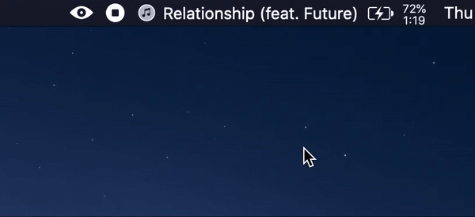

- Menu Bar Fixes
- The popover will now toggle when the menu bar button is pressed, whereas previously it would not.
- Fixed a bug where infinite Music Bar windows could be opened if the menu bar button was to be spammed.
Thank you for using Music Bar. Please support the project by donating. Every little bit helps and it motivates me to make more cool stuff! 💜